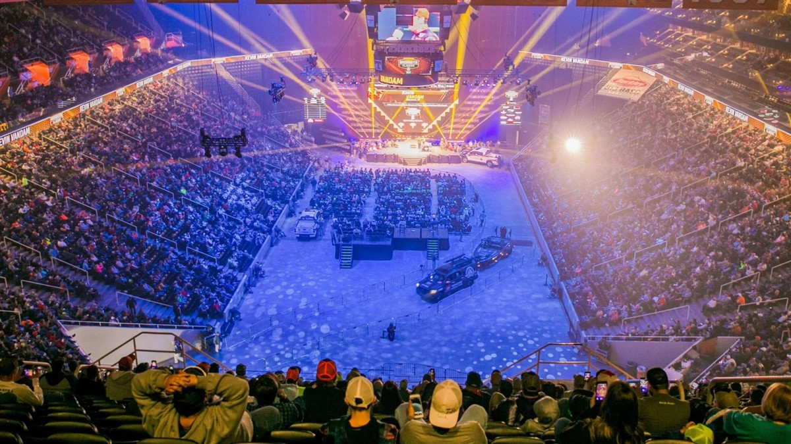

Spatial-Competitive Analytics in Professional Bass Fishing: A Network-Based Framework
Bradley Congelio Kutztown University of Pennsylvania
Source code available on GitHub
The Analytics Revolution in Sport
MLB: Sabermetrics
Moneyball Revolution
WAR, wOBA, FIP
NFL: Advanced Metrics
EPA, WPA
NextGen Stats, player tracking
NBA: Player Analytics
PER, VORP
The death of the mid-range shot
The Gap: Analytics without Data Abundance
Not every sport enjoys MLB’s pitch-by-pitch data. In bass fishing, the entire competitive record reduces to one number: daily tournament weight (sum of 5 heaviest fish).
This contrast poses an interesting challenge:What analytics are possible with only fundamental data?
Why Bass Fishing Matters

Bassmaster Elite Series
Professional sport with substantial prize money
National television coverage
102+ professional competitors
Multiple levels of competition
Current Analytics
Relies on primitive metrics
Total weight only
No tracking or advanced metrics
The Problem: How do we innovate a sport that has used the same antiquated metrics since 1967?
How to Replicate NFL’s Tracking Data
NFL Example
Player Tracking Data
Field position
Defensive/Offensive Alignment
Player speed-acceleration
Down & distance
Creates “Over Expected” Metrics
Rushing Yards over Expected
Completion Percentage over Expected
Expected Points Added (EPA)
What Bassmaster Needs
Spatial-Competitive Metrics to serve as middleware
Location Quality (PWC)
Competition Level (CAM)
Network Positioning (ILIM)
Bridge to WOE
What this research builds:
Necessary spatial framework
Location metrics
Competition analysis
This paper: The foundational spatial-competitive framework that builds the middleware for a context-aware over-expected metric in bass fishing.
Study Design: Toledo Bend 2024
Tournament Dataset:
1,587 individual fish catches
102 professional anglers
4 consecutive tournament days
February 22-25, 2024
Spatial Discretization Framework:
Grid-based spatial framework
20×20 uniform grid structure (400 cells)
Transforms continuous spatial domain into discrete units
Each catch assigned to cell via coordinates
Mathematical Assignment:
Catch \((lat_c, lon_c)\) → Cell \((j,k)\) where:
\(lat_j \leq lat_c < lat_{j+1}\)
\(lon_k \leq lon_c < lon_{k+1}\)
Scraping the Data
### function to fetch data for a specific tournament and datefetch_catch_data <-function(tournament_id, date_str) { url <-paste0("https://www.bassmaster.com/wp-json/data/v1/tournament/basstrakk/catches?tournament_id=", tournament_id, "&daydate=", date_str) response <-request(url) |>req_perform() |>resp_body_json()return(response)}### function to fetch leaderboard data for specific tournament and datefetch_leaderboard_data <-function(tournament_id, date_str) { url <-paste0("https://www.bassmaster.com/wp-json/data/v1/tournament/basstrakk/leaderboard?tournament_id=", tournament_id, "&daydate=", date_str) response <-request(url) |>req_perform() |>resp_body_json()### get wanted columns leaderboard_df <-bind_rows(response) |>select(Rank, FISHERMAN_PHONENAME, FISHERMENID)return(leaderboard_df)}
Toledo Bend 2024 Catches
Spatial Design: Create Uniform Grid
Spatial Discretization:
Create 20×20 uniform grid structure
Generate latitude and longitude sequences
Produce 400 discrete cells
Each cell has defined boundaries
Key Function:
Creates grid cells with unique IDs and coordinate boundaries for spatial membership evaluation
tournament_data <- tournament_data |>mutate(grid_cell =case_when( valid_coords ~ {# for each row find which grid cell it belongs tosapply(1:n(), function(i) { lat <- catch_latitude[i] long <- catch_longitude[i] cell <- grid |>filter( lat >= lat_min & lat < lat_max, long >= long_min & long < long_max) |>pull(cell_id)if(length(cell) ==0) return(NA_character_)return(cell[1]) }) },TRUE~NA_character_))
Step 3: Calculate Location Productivity
Aggregation by Location:
With catches assigned to grid cells, calculate location-level metrics:
Total catches per cell
Keeper fish counts
Total weight of keepers
Unique anglers per location
Average weight per keeper
Keeper ratio (quality)
Foundation for Metrics:
These aggregated location statistics enable calculation of PWC, CAM, and ILIM
Environmental: - Underwater structure (boulders, laydowns) - Depth contours and transitions - Creek channels and bottom composition - Weather and water conditions